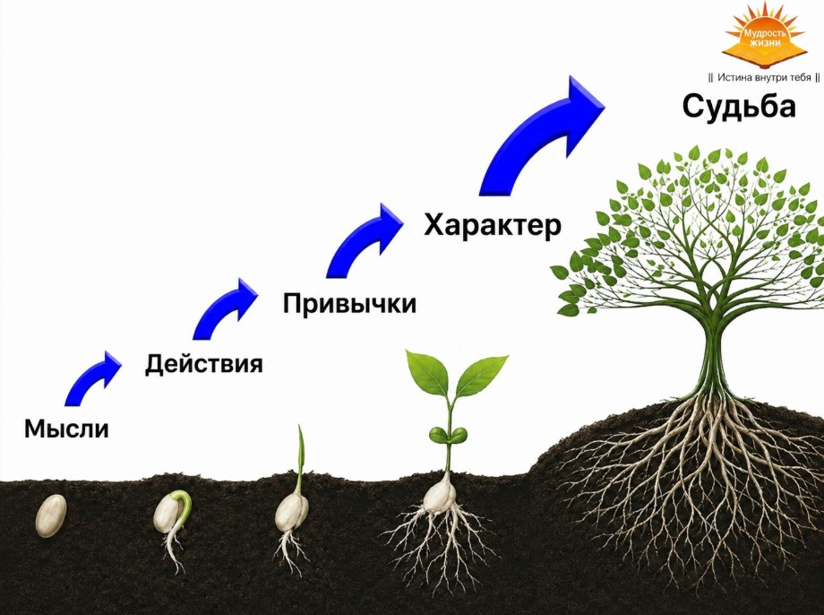

Почему боль возвращается снова
Помнишь, я сказал: мышцы зажимаются не только от того, как мы двигаемся, но и от того, что мы носим внутри? Вот теперь о самом главном. О том, о чём молчат и врачи, и массажисты.
Можно убрать триггеры и всё равно вернуться к боли
Ты можешь идеально прокатывать мышцы, убрать все узелки, и тебе станет легче. Так и будет. Но если не тронуть настоящий корень, через время боль вернётся.
Я прошёл это сам. Спину прихватывало то «на погоду», то когда наваливался стресс. Я списывал это на что угодно, пока не понял главное.
Настоящий корень в голове
Тело держит наши эмоции. То, что мы носим в себе годами: страхи, обиды, вину, злость на себя и на других. Зажатая психика это зажатые мышцы. Поясница каменеет не просто так, а в ответ на то, что у нас внутри.
Наше здоровье держится прежде всего на умонастроении. Тот негатив, что мы копим день за днём, постепенно превращается в болезни тела. И пока этот груз живёт внутри, мышцы снова и снова будут стягиваться, как бы хорошо ты их ни катал.
Вот почему боль возвращается даже к тем, кто честно делает упражнения и прокатку. Они лечат тело, но не трогают то, что им управляет.
Всё начинается с мысли, которая ведёт к действию. Одно и то же действие превращается в привычку, привычка формирует характер, а характер предопределяет нашу судьбу. Таким образом, какие мысли у нас преобладают, то мы и получаем. И это касается не только здоровья, но и отношений, и финансов.

Честно про то, что дальше
И тут я буду честен с тобой. Снять триггеры валиком ты можешь сам, я показал как. А вот вытащить из себя застарелые обиды, страхи и вину в одиночку почти невозможно.
Это глубокая работа. Для неё нужны специальные техники и человек рядом, который проведёт тебя через неё. Сам себя за этот корень не вытащишь, сколько ни старайся.
Твой следующий шаг
Корень мы вскроем дальше. А сейчас вернёмся к телу и пройдём метод до конца: правильные инструменты, точная техника, упражнения и питание. С этого начинается полное восстановление.